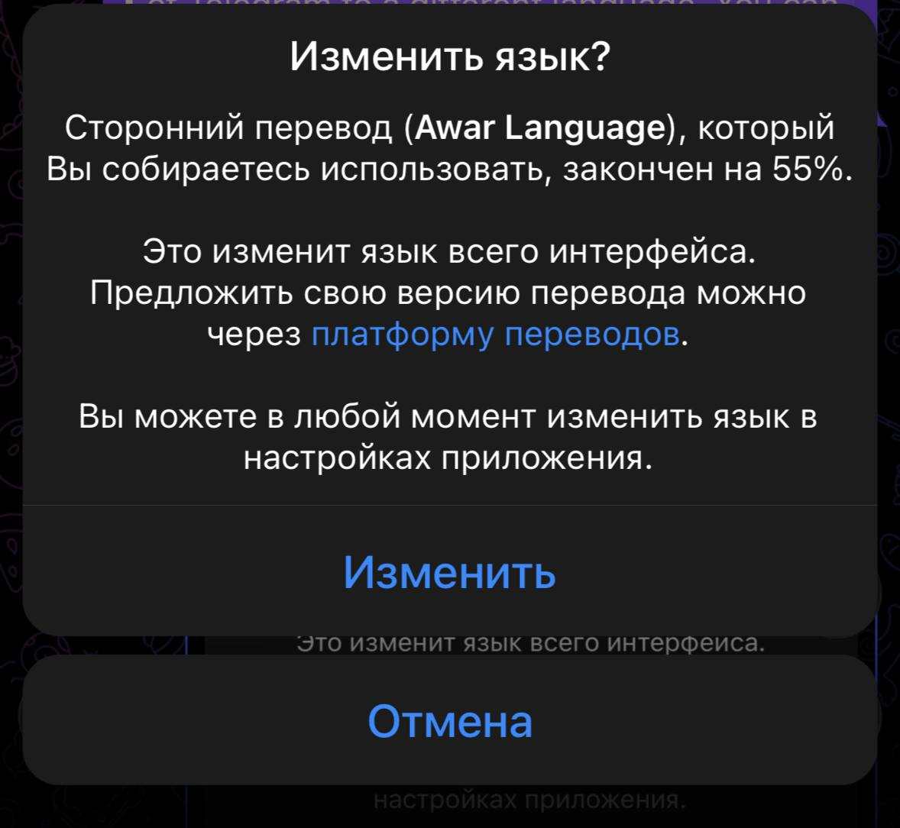

Проект создан для пользователей, которые хотят использовать Telegram на аварском языке и участвовать в развитии перевода.
🚀 Установить аварский интерфейс в Telegram 📢 Канал проекта 💬 Чат обсуждения ✍️ Предложить переводСкриншот интерфейса
Как помочь проекту?
Вы можете предложить улучшения перевода, сообщить об ошибках или принять участие в развитии аварского языка в Telegram.